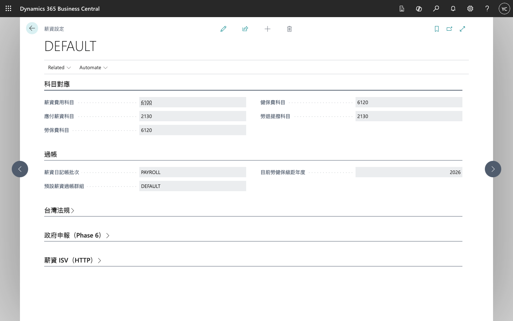

TW Payroll Setup（薪資設定）
開啟頁面
於 Business Central 搜尋列輸入 薪資設定 或 TW Payroll Setup。

科目對應
| 欄位 | 建議科目 | 說明 |
|---|---|---|
| Salary Expense Account | 6100 | 薪資費用 |
| Accrued Salaries Account | 2130 | 應付薪資 |
| Labor Insurance Account | 6120 | 勞保費 |
| Health Insurance Account | 6120 | 健保費 |
| Pension Account | 2130 | 勞退提撥 |
科目需已存在於 G/L Account；示範資料僅在科目存在時寫入。
台灣法規欄位
| 欄位 | 說明 |
|---|---|
| Effective Bracket Year | 目前適用勞健保級距年度 |
| Physio Leave Exempt Days | 生理假前 N 日不併入病假 |
| Night Shift Cutoff Hour | 跨夜班歸屬日 cutoff（小時） |
可選 ISV 介接
於 Payroll ISV Endpoint URL 填入外部薪資引擎 HTTPS 端點；空白時使用延伸模組內建試算邏輯。
建置檢查
- 五個 G/L 科目已建立並填入
- GENERAL 日記帳範本下有可用 Batch
- Effective Bracket Year 與勞健保級距年度一致
- 員工卡片已設定投保金額並套用級距
權限集：TW Payroll Admin（管理）、TW HR User（員工自助）。